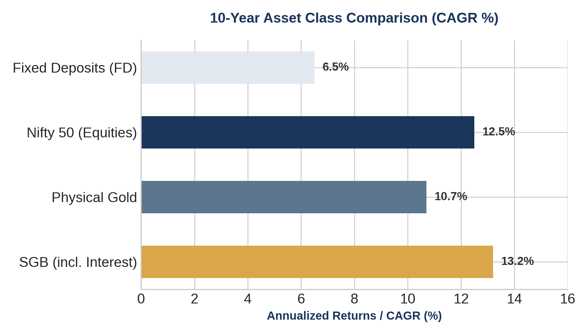
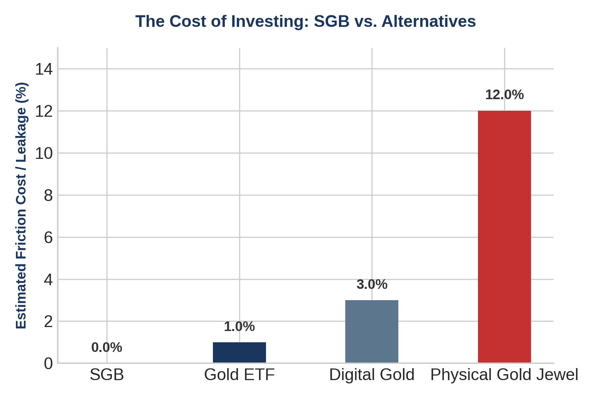

1. Executive Summary: The Golden Paradox
When the Government of India launched the Sovereign Gold Bond (SGB) Scheme in November 2015, it was heralded as an economic masterstroke. The objective was brilliant in its elegance: redirect India’s insatiable physical gold demand—which severely hemorrhaged the country's current account deficit (CAD)—into a digital, productive financial instrument. For investors, it promised a win-win deal: paper safety, capital appreciation pegged entirely to international gold spot rates, and an additional 2.50% annual fixed coupon paid semi-annually. To sweeten the deal, the capital gains upon maturity after an 8-year lock-in were declared entirely tax-free.
A decade down the line, a crucial question arises: Was the SGB program a resounding, undisputed super-hit, or is it silently mutating into a structural fiscal disaster for the national exchequer? The answer is far from binary. For the retail investor, the SGB has proven to be an absolute, unmitigated bonanza, comfortably outperforming conventional debt instruments and holding its ground against equity volatility. However, from the lens of macroeconomics and public finance management, the scheme is beginning to look like an incredibly expensive mistake. As the early, massive tranches of 2016 and 2017 hit their absolute maturity dates, the Reserve Bank of India (RBI) faces the daunting task of paying out gargantuan capital gains, driven by a spectacular, unforeseen macro-bull run in gold prices. This deep-dive explores both sides of this golden coin.
2. The Retail Investor’s Verdict: An Absolute Bonanza
To appreciate why the SGB scheme has captured the imagination of the Indian middle class, one must evaluate it against traditional modes of gold ownership. Historically, buying gold meant navigating a maze of structural leakages: making charges (ranging from 8% to 25%), storage anxieties, insurance premiums, purity concerns, and deep haircuts at the time of resale. The SGB systematically dismantled every single one of these frictions. Investors buy at pure institutional spot price (often with a ₹50 per gram online discount) and sell exactly at spot price, preserving 100% of their capital efficiency.

Consider an investor who subscribed to Tranche-I in November 2015 at an issue price of ₹2,684 per gram. Upon maturity in November 2023, the redemption price fixed by the RBI was a staggering ₹6,132 per gram. This represents a magnificent absolute capital gain of over 128%. When translated into a Compounded Annual Growth Rate (CAGR), the investment yielded a nominal return of 10.8% from capital gains alone. When you layer the 2.50% annual interest on top, the total effective CAGR leaps to approximately 13.3%. For a safe, sovereign-backed asset class, beating the Nifty 50 over a multi-year horizon while remaining entirely tax-free is an unprecedented financial anomaly.
TAX ADVANTAGE INSIGHT: The tax exemption under Section 47(viib) of the Income Tax Act remains the ultimate weapon for SGBs. While physical gold attracts a steep long-term capital gains tax (LTCG), the absolute exemption of SGB maturity proceeds turns it into one of India's premier legal tax havens.
3. The Sovereign Exchequer's Dilemma: A Delayed Fiscal Crisis?
While retail investors celebrate their tax-free windfalls, the corridors of the Ministry of Finance and the RBI are filled with growing anxiety. The fundamental design flaw of the SGB lies in its core risk profile: the state has borrowed money in fiat currency but has committed to repaying it in a liability indexed entirely to a volatile, globally priced commodity. Gold is a traditional safe-haven asset that thrives during times of geopolitical unrest, global inflation, and currency devaluations—precisely the conditions under which a government's fiscal revenues are under the most severe strain.
Had the government raised an equivalent amount of capital through standard Government Securities (G-Secs) over the last decade, it would have locked in a predictable, stable interest rate of roughly 6.5% to 7.5% per annum. Instead, the total cost of servicing early SGB tranches has ballooned to an effective rate of 13% to 14% per annum. The government is effectively paying equity-like returns on a sovereign debt instrument, all while surrendering its right to tax those very gains. This represents a substantial transfer of wealth from general taxpayers to a select segment of gold-owning affluent investors.

4. Comparative Matrix: SGB vs. Alternative Gold Classes
To provide clear guidance for a modern financial portfolio, we must systematically dissect how the Sovereign Gold Bond stacks up against other mainstream investment mechanisms across multiple core dimensions:
| Feature / Metric | Sovereign Gold Bonds | Gold ETFs / Mutual Funds | Digital Gold (Apps) | Physical Gold Bullion |
|---|---|---|---|---|
| Annual Income | 2.50% Fixed Coupon (Taxable) | None (Fund management fee drag) | None (Storage fees may apply) | None (Incurs storage & locker costs) |
| Capital Gains Tax | 100% Free upon 8-Year Maturity | Taxed as per individual slabs | Short/Long Term Capital Gains applicable | Taxed at 12.5% with indexation benefits removal |
| Liquidity Profile | Traded on Exchanges; 5-Yr RBI Exit | High; immediate exchange liquidation | High; instant sell-back options | Moderate; dependent on physical dealers |
| Transaction Costs | Zero (Often discounted online) | 0.5% - 1.0% annual expense ratio | 3% upfront GST leak on buy price | 3% GST + 5% to 20% making charges |
5. Strategic Outlook: The Paradigm Shift Ahead
Recognizing the unsustainable trajectory of SGB issuance, the central government has already begun shifting its strategy. Over recent operational updates, the frequency of new SGB issuances has been sharply curtailed. Furthermore, the Union Budget 2024 dramatically slashed physical gold import duties from 15% to 6%, a move that immediately triggered a sharp, localized drop in domestic gold spot prices. Because the RBI's SGB redemption liabilities are pegged directly to domestic prices, this policy shift effectively saved the government hundreds of crores in upcoming maturity payouts, highlighting how actively the state is working to mitigate its exposure.
So, what is the ultimate verdict? For the retail investor, the Sovereign Gold Bond has been an absolute, undeniable super-hit. It stands out as an exceptional example of a highly secure, high-yielding, tax-shielded asset class that has delivered masterclass results over the last eight years. However, for the sovereign exchequer, it has served as an expensive, high-risk fiscal lesson. Moving forward, investors should brace for fewer, more tightly regulated primary issuances, and perhaps more restrictive tax clauses. The golden era of unrestrained SGB arbitrage is drawing to a close, making it vital for savvy wealth managers to secure existing secondary market tranches while they remain available.
© MnV Consulting LLP | This blog is for informational purposes only and does not constitute legal or financial advice.